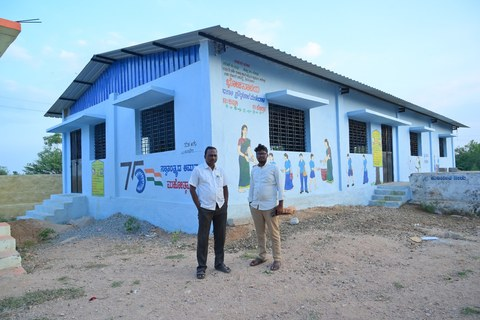
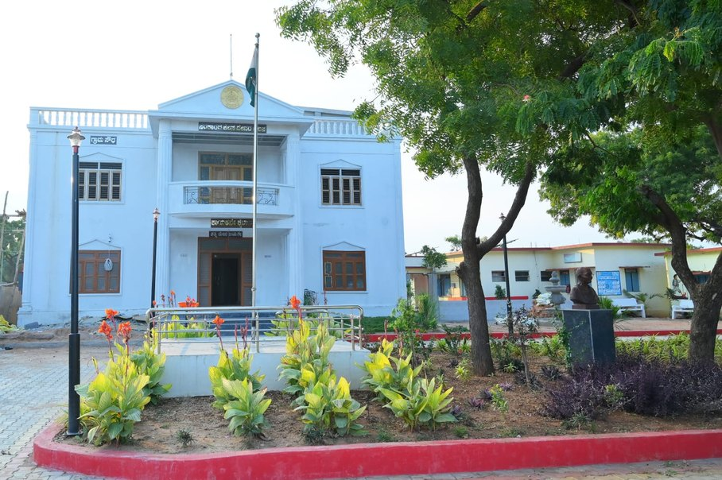
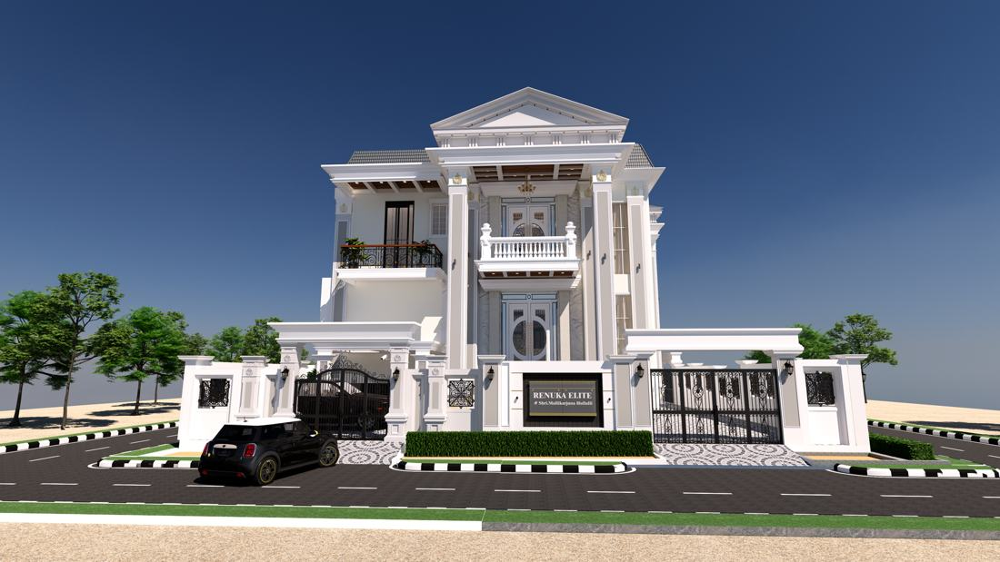
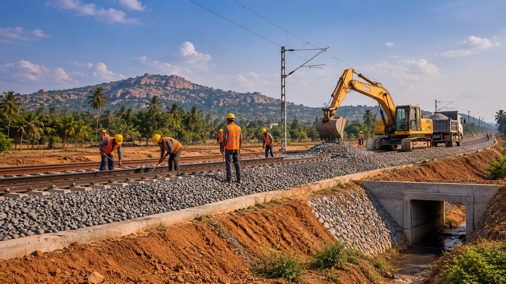
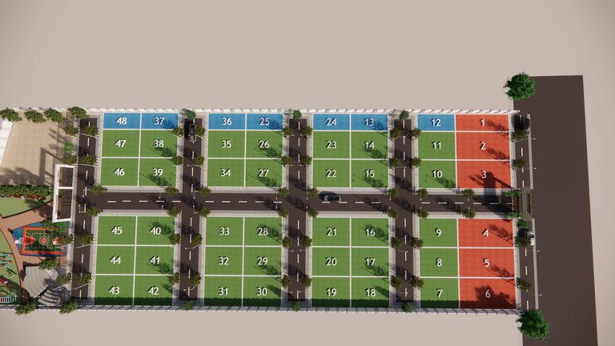
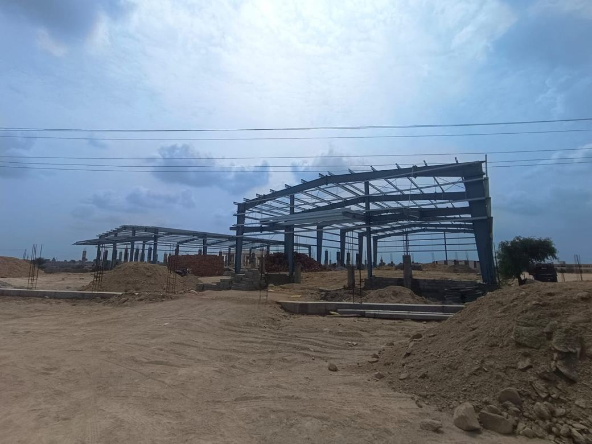
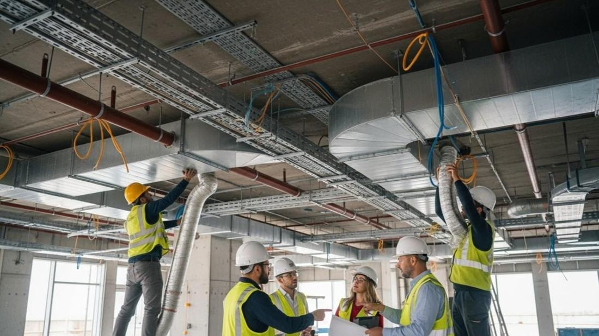
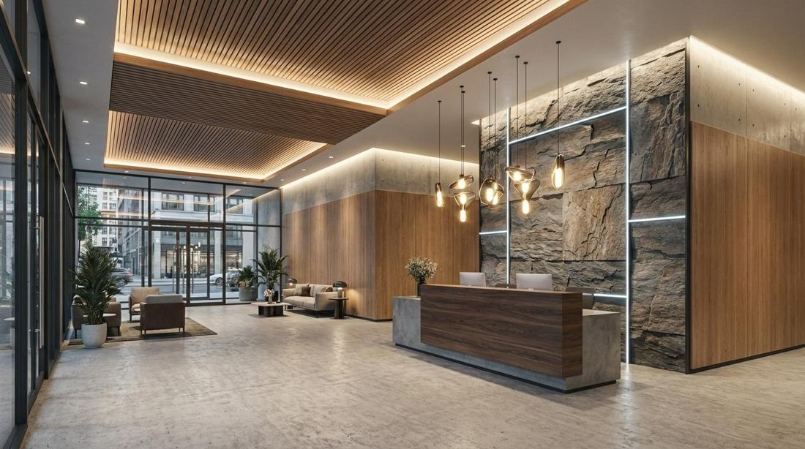
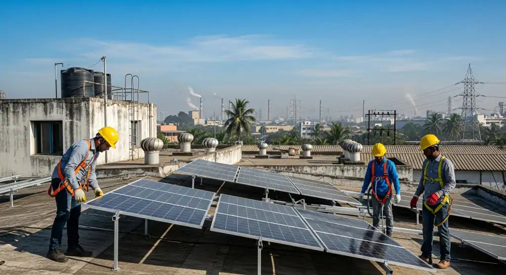
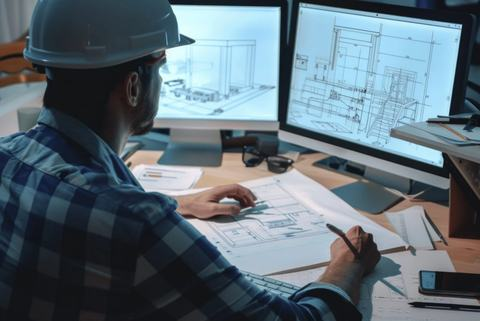

Civil Construction & Building Works
Building construction and coordinated civil work packages.
Mahirex Constructions Private Limited
Integrated construction, engineering and infrastructure support, brought together through practical planning, coordinated delivery and quality-focused execution.
WHO WE ARE
Mahirex Constructions Private Limited (MRCPL) is a construction and engineering company focused on delivering reliable, efficient and quality-driven solutions across the built environment.
Our approach brings together engineering expertise, practical planning, coordinated execution and a commitment to quality. From building construction and infrastructure development to architectural design, engineering consultancy and specialised construction services, we aim to provide integrated solutions tailored to each project’s requirements.
Explore our capabilitiesINTEGRATED SOLUTIONS
MRCPL brings construction, engineering, infrastructure and project support together to serve residential, commercial, industrial and infrastructure requirements.
Building construction and coordinated civil work packages.
Planning, design documentation, engineering and BIM coordination.
Subcontract support for railway infrastructure packages.
Roads, site development and essential infrastructure.
Industrial buildings, pre-engineered structures and steel work.
Coordination for mechanical, electrical and plumbing systems.
Interior planning and finishing for built environments.
Selected renewable energy and specialist work packages.
Planning, coordination and technical project support.
VISION · MISSION · VALUES
To become a trusted and recognised construction and engineering company known for quality, innovation, technical excellence and sustainable development.
To deliver reliable, efficient and value-driven solutions through careful planning, professional execution, effective coordination and a commitment to quality, safety, transparency and client satisfaction.
PROJECT & SITE PHOTOS
Selected photographs shared by MRCPL. Project references and package particulars are available on request.



OUR APPROACH
Thoughtful planning, technical coordination, responsible practices and lasting client relationships shape how we approach each assignment.
Thoughtful planning, technical coordination and cost-conscious decision-making.
A systematic approach to construction, workmanship and project coordination.
Transparent communication, responsible practices and attention to client requirements.
Practical, sustainable and efficient solutions designed for long-term value.
To transform ideas into well-planned, professionally executed projects through engineering excellence, responsible construction practices and lasting client relationships.
INTEGRATED SERVICE PORTFOLIO
The service scope for each assignment is defined around the project brief, technical requirements, approvals and agreed responsibilities.
BUILDINGS & TURNKEY
Construction support for residential, commercial, institutional and industrial developments.

02DESIGN & DOCUMENTATION
Design and technical documentation to support planning, coordination and construction.

03RAILWAY INFRASTRUCTURE
Subcontract support for railway infrastructure packages, shaped around the agreed project scope and site requirements.

04LAND & INFRASTRUCTURE
Planning and execution support for site development and essential infrastructure.

05INDUSTRIAL FACILITIES
Coordinated support for industrial buildings, warehouses and steel structures.

06BUILDING SYSTEMS
Building service planning and coordination across architectural and structural requirements.

07INTERIOR SPACES
Interior planning and finishing coordination for homes, workplaces and institutions.

08SPECIALISED WORKS
Selected energy and specialist construction requirements, based on project scope.

09PLANNING & OVERSIGHT
Planning, documentation and coordination to support controlled project delivery.
HOW WE ENGAGE
From design documentation and technical consultancy to construction execution and specialist work packages, each engagement is structured around agreed deliverables, budget, responsibilities and timeline.
OUR RESOURCES
MRCPL can discuss labour, machinery and supervision requirements for railway, road, earthwork, building and civil packages.
SITE-READY SUPPORT
Team composition, equipment and deployment are confirmed against the scope, site location, schedule and availability.
Labour support for railway and civil work sites. Teams of approximately 30–50 workers can be discussed based on project needs and availability.
JCB, tipper, tractor, water tanker and roller supply on hire, as required for the project package.
Site engineer and supervisor support can be arranged to match work requirements and site coordination needs.
PROJECT-BASED MOBILISATION
Share the project or package name, site location, work scope, timeline and resource requirements. MRCPL will discuss the proposed arrangement and availability.
WHY CHOOSE MRCPL · OUR STRENGTH
Successful projects rely on technical expertise, thoughtful planning, transparent communication and a clear understanding of client expectations.
Construction, engineering, design, infrastructure and project support coordinated together.
Technical knowledge informs planning, documentation and execution.
Decisions account for project needs, resources and value.
Workmanship, appropriate standards and responsible site practices stay in focus.
Scope, schedule and requirements guide the work plan.
Responsibilities, progress and coordination are communicated clearly.
Project requirements and disciplines are considered together.
Each assignment is shaped around the client brief and agreed scope.
We aim to deliver value through thoughtful engineering, responsible construction practices, effective coordination and a professional approach to every assignment.
Quality-focused work · Clear communication · Practical engineering · Long-term valueA DIRECT, HANDS-ON APPROACH
As Managing Director, Mehaboob Ankasadoddi leads MRCPL’s focus on reliable delivery, quality work and trusted relationships with project partners.
Company registration, PAN and GST, Udyam/MSME, EPF and ESI documents are available on request.
Discuss a projectCONTACT
Share the location, work scope and support you need. MRCPL is committed to delivering reliable project execution through efficient planning and coordination.
GET IN TOUCH
For all construction and infrastructure development requirements, please contact our team by phone or email. We look forward to contributing to your projects with quality workmanship and reliable execution.
Sindhanur, Raichur District, Karnataka 584128